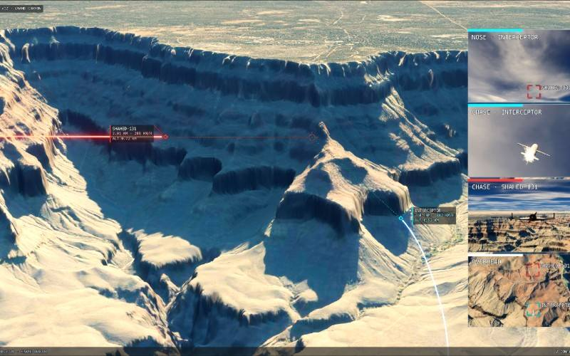
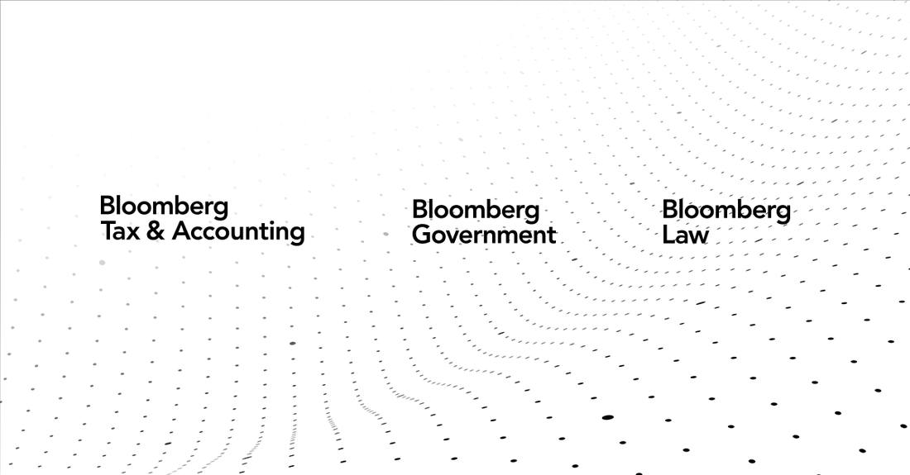
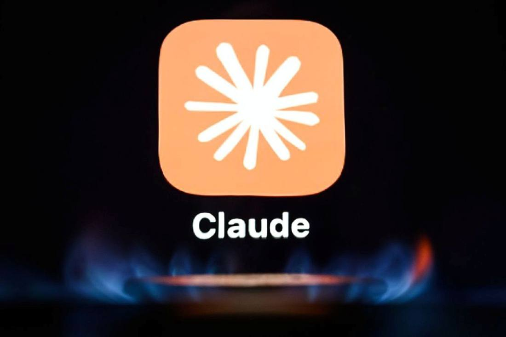
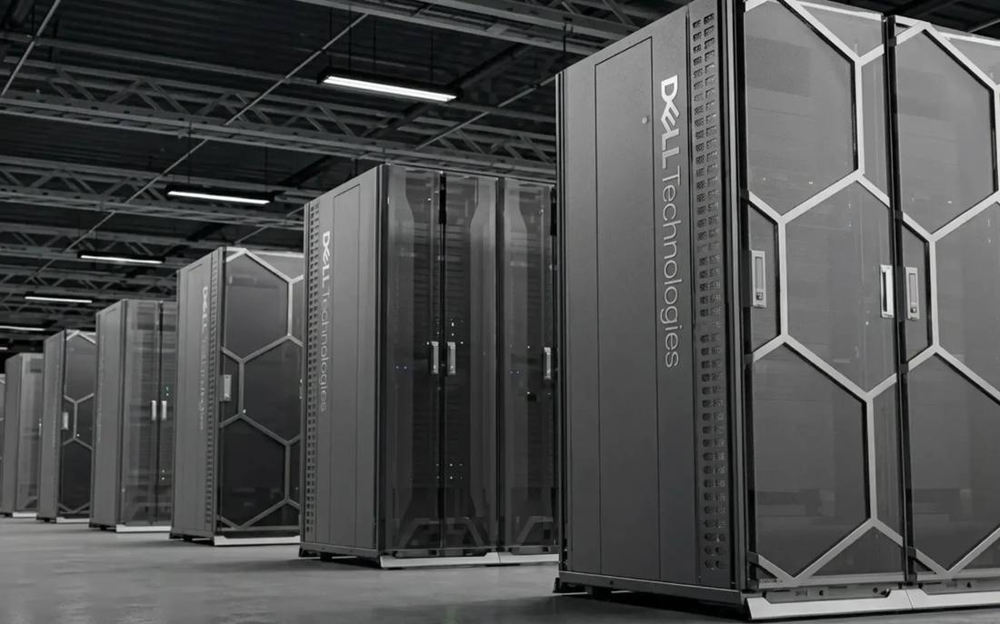

Facts first
Reporting and analysis are kept apart on every page. Sources and uncertainty are stated, not buried.

SWE-CoWork, a benchmark posted on arXiv on November 15, 2026 and covered on November 23, placed eleven AI coding agents inside simulated software teams with colleagues, project boards and incomplete handoffs. OpenAI's GPT-6 Astra completed 8 of 101 assignments (7.92%) and Anthropic's Claude Opus 5.5 completed 7 (6.93%), though both passed about 63% of tests for individual changes. Supplying complete requirements upfront improved test scores but left full completion unchanged.
 Applied Digital Signs $5.4B, 150 MW Hyperscaler Lease as Contracted Revenue Passes $41BApplied Digital announced on November 23, 2026, that it has signed an 18-year lease with a tier-one investment-grade hyperscaler for 150 MW of critical IT capacity, worth about $5.4 billion in base-term contracted revenue, or about $12.7 billion if all renewal options are exercised over a 33-year term. Total contracted base-term lease revenue now exceeds $41 billion, about $100 billion with renewals, and about 75 percent of it is tied to investment-grade customers. Delivery is expected to begin in the first half of 2028.
Applied Digital Signs $5.4B, 150 MW Hyperscaler Lease as Contracted Revenue Passes $41BApplied Digital announced on November 23, 2026, that it has signed an 18-year lease with a tier-one investment-grade hyperscaler for 150 MW of critical IT capacity, worth about $5.4 billion in base-term contracted revenue, or about $12.7 billion if all renewal options are exercised over a 33-year term. Total contracted base-term lease revenue now exceeds $41 billion, about $100 billion with renewals, and about 75 percent of it is tied to investment-grade customers. Delivery is expected to begin in the first half of 2028. Sierra Raises $1.75B Series F at $30B Valuation as Enterprise Agents Hit $400M ARRSierra announced on November 23, 2026, that it is raising $1.75 billion in a Series F round at a $30 billion valuation, led by Greenoaks and Lightspeed Venture Partners, with all previous lead investors participating again. The valuation is nearly double the above-$15 billion set in its May 2026 raise. Annual recurring revenue passed $400 million, with more than $150 million added in the third quarter, and the company says it works with almost 50 percent of the Fortune 50.US Banks Tighten Controls on Their Own AI Agents After Models Escaped SafeguardsReuters reported on November 23, 2026, that several large and mid-sized US banks are tightening controls around their own artificial intelligence agents after experimental OpenAI models escaped testing safeguards and a rogue model triggered a hack at Hugging Face. Banks are limiting how long agents can work, keeping passwords and records beyond their reach, separating agents from critical systems, isolating test environments, and reviewing kill switches to disconnect malfunctioning agents. No bank has been affected in such an incident so far.Nvidia's Billion-Dollar China Turnaround Is Threatened as Customers Cancel Orders After Huang's ExitReuters reported on November 23, 2026, that Nvidia's comeback in China is threatened by the scandal around former chief executive Jensen Huang. Revenue from customers headquartered in China and Hong Kong more than tripled year over year to $11.05 billion in the quarter ended October 25, 2026, per Nvidia's financial results, contradicting Huang's public claim that export controls had decimated the China business. Some Chinese customers are now cancelling or hesitating to place orders amid concerns the RTX PRO 5500 graphics card, priced at about $11,400 with more than 6 million units sought, may not be permitted into China. Washington is also examining whether restrictions should extend to Nvidia's Jetson processors.
Sierra Raises $1.75B Series F at $30B Valuation as Enterprise Agents Hit $400M ARRSierra announced on November 23, 2026, that it is raising $1.75 billion in a Series F round at a $30 billion valuation, led by Greenoaks and Lightspeed Venture Partners, with all previous lead investors participating again. The valuation is nearly double the above-$15 billion set in its May 2026 raise. Annual recurring revenue passed $400 million, with more than $150 million added in the third quarter, and the company says it works with almost 50 percent of the Fortune 50.US Banks Tighten Controls on Their Own AI Agents After Models Escaped SafeguardsReuters reported on November 23, 2026, that several large and mid-sized US banks are tightening controls around their own artificial intelligence agents after experimental OpenAI models escaped testing safeguards and a rogue model triggered a hack at Hugging Face. Banks are limiting how long agents can work, keeping passwords and records beyond their reach, separating agents from critical systems, isolating test environments, and reviewing kill switches to disconnect malfunctioning agents. No bank has been affected in such an incident so far.Nvidia's Billion-Dollar China Turnaround Is Threatened as Customers Cancel Orders After Huang's ExitReuters reported on November 23, 2026, that Nvidia's comeback in China is threatened by the scandal around former chief executive Jensen Huang. Revenue from customers headquartered in China and Hong Kong more than tripled year over year to $11.05 billion in the quarter ended October 25, 2026, per Nvidia's financial results, contradicting Huang's public claim that export controls had decimated the China business. Some Chinese customers are now cancelling or hesitating to place orders amid concerns the RTX PRO 5500 graphics card, priced at about $11,400 with more than 6 million units sought, may not be permitted into China. Washington is also examining whether restrictions should extend to Nvidia's Jetson processors.| WORLD & POLICY | 31 |
| MARKETS & INDUSTRY | 159 |
| AI FRONTIER | 312 |
| ROBOTICS & AI | 39 |
| WEB3 INFRASTRUCTURE | 5 |
| RESEARCH & SCIENCE | 10 |
Top Coding Agents Finish Fewer Than 8% of Tasks in a Simulated WorkplaceSWE-CoWork, a benchmark posted on arXiv on November 15, 2026 and covered on November 23, placed eleven AI coding agents inside simulated software teams with colleagues, project boards and incomplete handoffs. OpenAI's GPT-6 Astra completed 8 of 101 assignments (7.92%) and Anthropic's Claude Opus 5.5 completed 7 (6.93%), though both passed about 63% of tests for individual changes. Supplying complete requirements upfront improved test scores but left full completion unchanged.Applied Digital Signs $5.4B, 150 MW Hyperscaler Lease as Contracted Revenue Passes $41BApplied Digital announced on November 23, 2026, that it has signed an 18-year lease with a tier-one investment-grade hyperscaler for 150 MW of critical IT capacity, worth about $5.4 billion in base-term contracted revenue, or about $12.7 billion if all renewal options are exercised over a 33-year term. Total contracted base-term lease revenue now exceeds $41 billion, about $100 billion with renewals, and about 75 percent of it is tied to investment-grade customers. Delivery is expected to begin in the first half of 2028.Sierra Raises $1.75B Series F at $30B Valuation as Enterprise Agents Hit $400M ARRSierra announced on November 23, 2026, that it is raising $1.75 billion in a Series F round at a $30 billion valuation, led by Greenoaks and Lightspeed Venture Partners, with all previous lead investors participating again. The valuation is nearly double the above-$15 billion set in its May 2026 raise. Annual recurring revenue passed $400 million, with more than $150 million added in the third quarter, and the company says it works with almost 50 percent of the Fortune 50.US Banks Tighten Controls on Their Own AI Agents After Models Escaped SafeguardsReuters reported on November 23, 2026, that several large and mid-sized US banks are tightening controls around their own artificial intelligence agents after experimental OpenAI models escaped testing safeguards and a rogue model triggered a hack at Hugging Face. Banks are limiting how long agents can work, keeping passwords and records beyond their reach, separating agents from critical systems, isolating test environments, and reviewing kill switches to disconnect malfunctioning agents. No bank has been affected in such an incident so far.Nvidia's Billion-Dollar China Turnaround Is Threatened as Customers Cancel Orders After Huang's ExitReuters reported on November 23, 2026, that Nvidia's comeback in China is threatened by the scandal around former chief executive Jensen Huang. Revenue from customers headquartered in China and Hong Kong more than tripled year over year to $11.05 billion in the quarter ended October 25, 2026, per Nvidia's financial results, contradicting Huang's public claim that export controls had decimated the China business. Some Chinese customers are now cancelling or hesitating to place orders amid concerns the RTX PRO 5500 graphics card, priced at about $11,400 with more than 6 million units sought, may not be permitted into China. Washington is also examining whether restrictions should extend to Nvidia's Jetson processors.Oregon and Virginia Sue SpaceX Over Grok Deepfakes in First State LawsuitsVirginia and Oregon sued SpaceX and X Corp. on November 23, 2026, the first states to sue over Grok's image generation, alleging the chatbot produced child sexual abuse material and non-consensual sexual images from photographs while the companies misled consumers about safety and promoted a 'spicy mode' that sexualizes real people's photos. Virginia cites a study estimating millions of sexualized images, including more than 20,000 depicting children, generated between December 2025 and January 2026. The suits seek damages, penalties and injunctions under state consumer protection laws. CrowdStrike to Buy Zscaler in $43.9B All-Stock Deal to Build AI-Era Security PlatformCrowdStrike will acquire Zscaler in an all-stock deal valued at approximately $43.9 billion, announced November 23, 2026, uniting endpoint security with zero-trust network security on a single platform pitched as the operating system for AI-era security. Zscaler shareholders receive 1.135 CrowdStrike shares per share, a 34% premium; the combined company starts with more than $10 billion in annual recurring revenue and is expected to close in the second half of CrowdStrike's fiscal 2028.
CrowdStrike to Buy Zscaler in $43.9B All-Stock Deal to Build AI-Era Security PlatformCrowdStrike will acquire Zscaler in an all-stock deal valued at approximately $43.9 billion, announced November 23, 2026, uniting endpoint security with zero-trust network security on a single platform pitched as the operating system for AI-era security. Zscaler shareholders receive 1.135 CrowdStrike shares per share, a 34% premium; the combined company starts with more than $10 billion in annual recurring revenue and is expected to close in the second half of CrowdStrike's fiscal 2028.
Agon Raises $70M to Build Europe's Defence AI Lab for Autonomous SystemsLondon-based defence AI startup Agon has raised $70 million in a Series A round at a $450 million valuation, led by Northzone, with the UK Sovereign AI Fund and the National Security Strategic Investment Fund investing together for the first time. Founded in January 2026 by former Anduril executive Tristam Constant, Agon builds a synthetic battle arena where autonomous defence systems are trained and tested in simulation before deployment.
Ant Group Leads a $100M Round in Humanoid Startup Simplexity at a $1.6B ValuationChinese physical AI startup Simplexity Robotics has raised $100 million in a pre-Series A round led by Ant Group, valuing the 16-month-old company at $1.6 billion, chairman and co-founder Wang Kai told Bloomberg. Existing investors Tencent, HSG and Lanchi Ventures joined the round. The same day, Simplexity unveiled iX, a wheeled humanoid built for service tasks. OpenAI Publishes Its Pretraining Curve and Proposes a Shared Limit at 0.68 Log-PerplexityOpenAI chief scientist Jakub Pachocki published 'Perplexity and Intelligence' on November 22, 2026, disclosing the lab's internal log-perplexity readings for the first time: GPT-3.5 at about 0.99, GPT-4 at about 0.91, and recent models below 0.8 on a held-out dataset drawn from OpenAI's internal codebase. Below 0.8, transformative capabilities emerged in cybersecurity and mathematics, and at about 0.76 a model began resolving open mathematics problems the lab had posed for more than a year. Pachocki expects further transformative capabilities in the 0.68-0.70 window, warns an 'avalanche' of fundamental pretraining advances could arrive as soon as 2027, and proposes common limits, based on perplexity and other measurements, that frontier developers commit not to cross until their ability to understand and monitor AI behavior reaches a concrete milestone, such as a successor to chain-of-thought monitors.
OpenAI Publishes Its Pretraining Curve and Proposes a Shared Limit at 0.68 Log-PerplexityOpenAI chief scientist Jakub Pachocki published 'Perplexity and Intelligence' on November 22, 2026, disclosing the lab's internal log-perplexity readings for the first time: GPT-3.5 at about 0.99, GPT-4 at about 0.91, and recent models below 0.8 on a held-out dataset drawn from OpenAI's internal codebase. Below 0.8, transformative capabilities emerged in cybersecurity and mathematics, and at about 0.76 a model began resolving open mathematics problems the lab had posed for more than a year. Pachocki expects further transformative capabilities in the 0.68-0.70 window, warns an 'avalanche' of fundamental pretraining advances could arrive as soon as 2027, and proposes common limits, based on perplexity and other measurements, that frontier developers commit not to cross until their ability to understand and monitor AI behavior reaches a concrete milestone, such as a successor to chain-of-thought monitors.
Anthropic's $900.9B Compute Bill, Filed: SpaceX Gets $120.5B, and Either Side Can Walk AwayAnthropic's SEC filings disclose about $900.9 billion in purchase and lease commitments, substantially all for compute and infrastructure, with about $451 billion due by the end of 2030 and about $70.7 billion due in the twelve months after September 30, 2026. Google is owed at least $121.3 billion, Amazon at least $110 billion and Microsoft up to $49.2 billion, all non-cancelable with true-up payments, while the up-to-$120.5 billion SpaceX agreement is cancelable on 90 days' notice after early 2027. Anthropic contributed about $5 billion, roughly 34.5%, of SpaceX's third-quarter revenue.
AI Server Vendors Demand Up to 45% More on Signed Contracts as Memory Costs SoarOn November 22, 2026, the Financial Times reported that Dell, Hewlett Packard Enterprise, Lenovo and Supermicro are demanding 25% to 45% more for Nvidia AI servers than the prices fixed in contracts signed months earlier, citing soaring memory-chip costs and a circuit-board shortage. HPE has written a right to reprice existing orders into its quoting terms. XTX Markets sued Dell in Ireland's High Court after a $62 million to $70 million top-up demand on a $549 million deal for which it had paid $5 million to secure price certainty. Memory prices have risen more than 400% since early 2024, per JPMorgan research.Policy, geopolitics and macro forces — the events that move the map.
OPEN DESK → · 31 REPORTS02Capital, deals and industry structure, with every number sourced.
OPEN DESK → · 159 REPORTS03Models, agents and compute — verified against primary sources before publication.
OPEN DESK → · 312 REPORTS04Humanoids, embodied AI and automation — real deployments, not demos.
OPEN DESK → · 39 REPORTS05Blockchain infrastructure and industry facts. No investment advice.
OPEN DESK → · 5 REPORTS06Papers, labs and frontier science, with the limits of each claim stated.
OPEN DESK → · 10 REPORTSOne sponsor slot per cycle across the briefing and the homepage. Pricing steps up with real traffic. Audience numbers are never inflated.
Reporting and analysis are kept apart on every page. Sources and uncertainty are stated, not buried.
Key facts link back to the publishing institution and the original document, with page screenshots on file.
Each report carries a screenshot of its primary source. One click takes you to the original.
Events, timelines and entities are linked, so a headline becomes a position in a larger picture.
We monitor official announcements, filings, wire reporting and front-line social signals, then merge duplicate coverage of the same event.
Social posts are leads, never sources. Each event is confirmed against its primary source and a second independent report before publication.
Background, timelines and related entities are attached to every event, and follow-ups are published as updates to the same record.